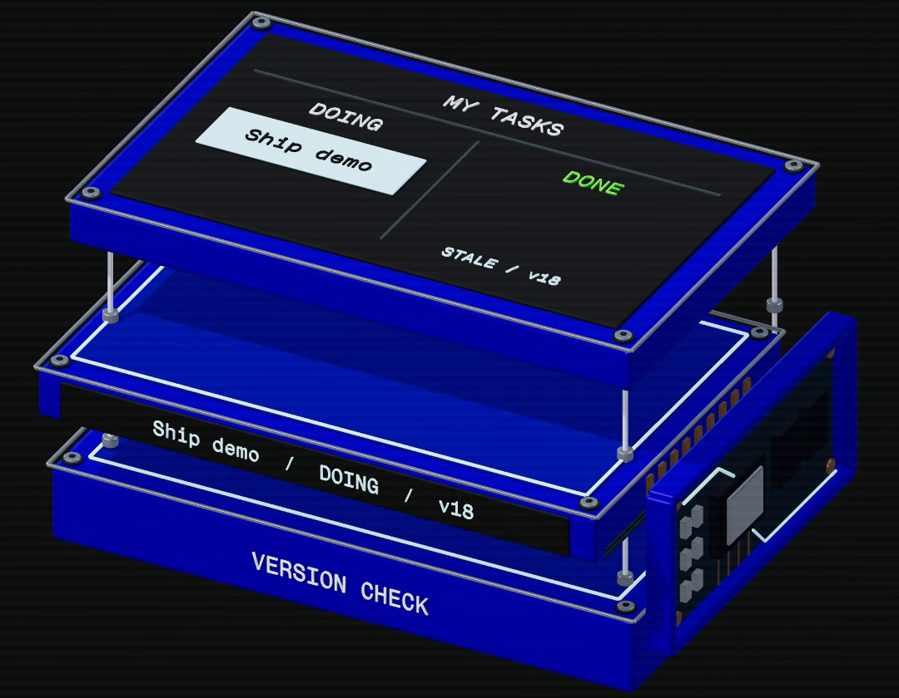

Catch the lost edit before you ship.
You move a task to Done. An older save moves it back. Claudex Loop gives your development plan another model’s scrutiny before you build, then gives the code an independent inspection. Start with a review-only run. Use the fixture below to see what a test can actually prove.

Write the planName the behavior that must hold.
then
Challenge the planThe other provider finds weak assumptions. Resolve the findings.
then
Build and testAfter authorization, implement and run the behavior checks.
then
Inspect the codeA fresh session from the other provider inspects the result.
Check these before you start.
Both CLIs
For the full cross-provider workflow, install and authenticate both Claude Code and Codex. Check the host versions and login state before starting.
Python 3.10+
The shared adapter uses Python 3.10 or newer. The README says no runtime pip packages or separate API keys are required for the adapter.
A real plan
Give the reviewer a plan with requirements, decisions, acceptance checks, and a proof command. A vague prompt produces a vague objection list.
Node.js for the fixture
The copyable proof fixture uses plain Node.js. It is an in-memory illustration of a stale write, not the Claudex Loop runtime.
Choose one route.
Claude Code plugin
/plugin marketplace add chaseai-yt/claudex-loop
/plugin install claudex-loop@claudex-loopCodex or manual installation — macOS / Linux
git clone https://github.com/chaseai-yt/claudex-loop.git
cd claudex-loop
mkdir -p ~/.agents/skills ~/.claude/skills
cp -R skills/. ~/.agents/skills/
cp -R skills/. ~/.claude/skills/Codex or manual installation — Windows PowerShell
git clone https://github.com/chaseai-yt/claudex-loop.git
Set-Location claudex-loop
New-Item -ItemType Directory -Force "$env:USERPROFILE\.agents\skills", "$env:USERPROFILE\.claude\skills" | Out-Null
Copy-Item -Recurse -Force skills\* "$env:USERPROFILE\.agents\skills\"
Copy-Item -Recurse -Force skills\* "$env:USERPROFILE\.claude\skills\"Open a new session after manual installation. The commands above are displayed setup instructions; this page does not install or execute the repository for you.
Review a plan before it can touch the code.
Save the sample plan below as PLAN.md, then run the review mode from the host you are using. The command asks for findings and a verdict; it does not authorise implementation.
claudex this plan, mode=review, plan=PLAN.md, rounds=3A small plan with a proof boundary
# Add version checks to the task update path
## Requirements
- Preserve the user's newest edit when an older save arrives later.
- Reject stale writes with a clear, inspectable result.
- Keep the change limited to the update path.
## Acceptance checks
- A current write is accepted.
- A stale write is rejected.
- A rejected stale save leaves the stored task in `Done` at its current version.
- A current save increments the stored version; reusing its old base is rejected.
- In production, the version predicate and write execute atomically in the database.
## Proof command
node fixture.mjs
Ask the reviewer to challenge missing failure modes, ambiguous ownership, and whether the proof command can distinguish the old behaviour from the protected behaviour. Record the findings before deciding whether to implement.
Watch the lost update fail, then add the version check.
This tiny plain-JavaScript fixture demonstrates the concept locally. It is an explanatory test, not a Claudex Loop benchmark or a report of a repository run.
import assert from 'node:assert/strict';
// Two editors read version 18. The first moves the task to Done.
const initial = { status: 'Doing', version: 18 };
const firstEdit = { expectedVersion: 18, patch: { status: 'Done' } };
const olderEdit = { expectedVersion: 18, patch: { status: 'Doing' } };
function save(stored, edit) {
if (edit.expectedVersion !== stored.version) {
return { accepted: false, task: stored };
}
return {
accepted: true,
task: { ...stored, ...edit.patch, version: stored.version + 1 }
};
}
const first = save(initial, firstEdit);
assert.equal(first.accepted, true);
assert.deepEqual(first.task, { status: 'Done', version: 19 });
// BEFORE: accepting the older payload unconditionally loses the edit.
const unsafe = { ...first.task, ...olderEdit.patch };
assert.equal(unsafe.status, 'Doing');
console.log('BEFORE: Done -> Doing; the older save overwrites the edit.');
// AFTER: the old base version no longer matches the stored version.
const rejected = save(first.task, olderEdit);
assert.equal(rejected.accepted, false);
assert.deepEqual(rejected.task, first.task);
console.log('AFTER: stale save rejected; Done and version 19 preserved.');
// A current editor can still save; its next version is assigned by save().
const current = save(first.task, {
expectedVersion: 19, patch: { status: 'Archived' }
});
assert.equal(current.accepted, true);
assert.deepEqual(current.task, { status: 'Archived', version: 20 });
// Reusing that now-old base version must fail, even if the payload differs.
assert.equal(save(current.task, {
expectedVersion: 19, patch: { status: 'Doing' }
}).accepted, false);
console.log('PASS: stale writes rejected and current writes accepted.');
// In production, compare expectedVersion and write in ONE atomic database
// operation. This sequential in-memory example does not test a real database.
Run it with node fixture.mjs. The unsafe path regresses Done to Doing. The guarded path preserves the newer state and rejects the stale write; a save based on the current stored version is accepted and receives a new version. In a real database, the version check and write must be one atomic conditional update, otherwise two writers can still race between the read and the write.
Make the decision legible.
Keep the plan path and review log explicit. Set builder=claude or builder=codex when the author matters; the inspector follows that builder choice and uses the other provider. The inspection defaults to on, while inspect=off is an explicit, logged opt-out. Carry the proof command into the run.
The runner records the plan path and SHA256 for approval. Changing the plan invalidates that approval. Later code changes need another independent inspection. These controls turn “looks fine” into a decision with a trace.
Suggested first boundary: review one real plan, inspect the findings, and stop. Only then decide whether this change is allowed to enter implementation.